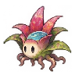
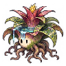

No.242
ブロミ
芽 通常
葉の間に雨をためて小さな虫と暮らす。水をためる筒形の葉が特徴。
基本データ
| 図鑑番号 | No.242 |
|---|---|
| タイプ | 芽タイプ |
| 進化 | Lv.24でブロメルに進化 |
| 入手方法 | 金香の段々街（Lv.51〜55）の草むらに出現。 |
Lv.50の能力値
| HP | 279 | |
|---|---|---|
| 攻撃 | 163 | |
| 防御 | 112 | |
| 特攻 | 164 | |
| 特防 | 114 | |
| 素早さ | 117 | |
| 命中 | 102 | |
| 回避 | 96 |
冒険中の能力値はレベルに応じて上がります。オンライン対戦の通常レンタルはLv.50で統一されます。
覚える技
| 技 | タイプ | 分類 | 威力 | 命中 | PP | 効果 |
|---|---|---|---|---|---|---|
| 茨のはさみ | 芽 | 物理 | 29 | 95 | 20 | まもりの構えを解いて攻撃する。 |
| 翡翠の根 | 芽 | 物理 | 39 | 93 | 15 | 地面を伝わる根の響きを放つ。 |
| 芽吹きの息 | 芽 | 回復 | — | — | 10 | 自分の最大体力の30%を回復。 PPを1消費する。 |
| 心音の波 | 無 | 物理 | 30 | 98 | 20 | 属性に左右されない心の響き。 |
進化の系譜
- ブロミLv.24 ▶
 ブロメルLv.42 ▶
ブロメルLv.42 ▶
ブロメリアン
タイプ相性
芽タイプの技は潮タイプに強く（1.5倍）、灯タイプの技を受けると効果が大きくなります。同じタイプの技を使うと威力が1.15倍になります。